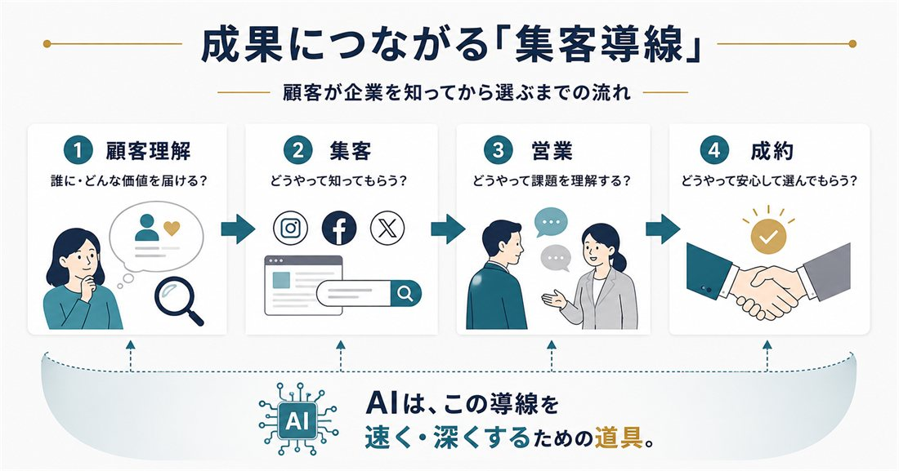
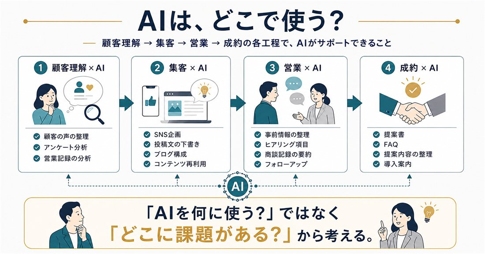
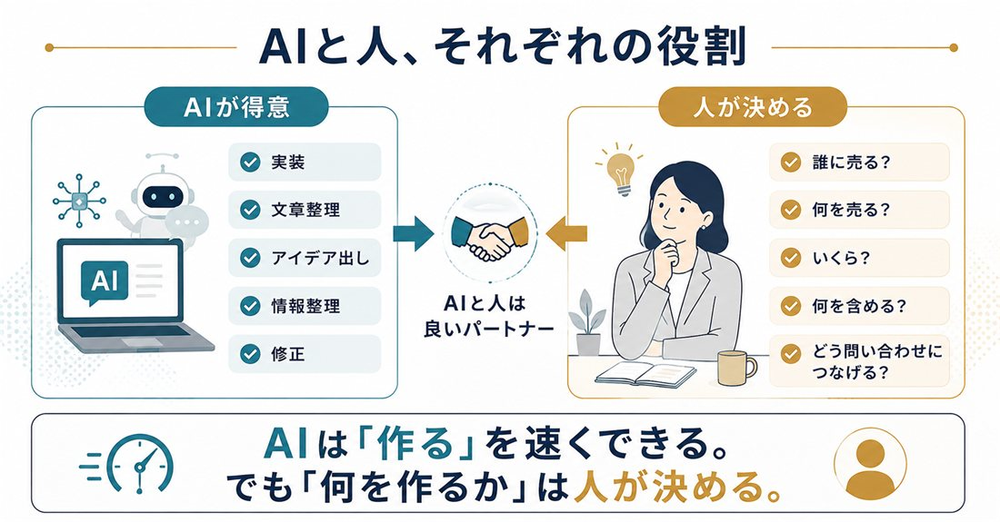
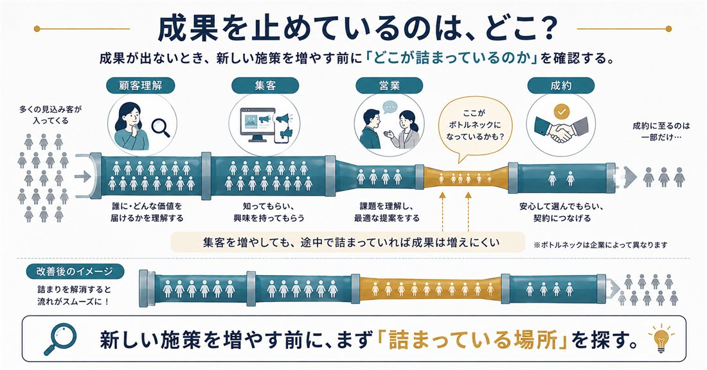

私はこれまで、X（旧Twitter）の運用・コンサルティング、Googleビジネスプロフィール（GBP）、 ホームページ改善など、さまざまな形でWeb集客に関わってきました。
その中で感じているのは、「良いツールを導入すること」と「成果につながること」は別だということです。
そして今、生成AIが急速に普及する中でも、同じことが起きているように感じます。
この記事では「集客」を、単に人を集めることではなく、
顧客理解 → 集客 → 営業 → 成約
まで含めた一連の流れとして考えます。
AIを導入する前に、この「集客の導線」を一度整理してみませんか。
1．なぜ「AIを使っているのに」成果が出ないのか
原因のひとつは、SNS、ホームページ、AIといった施策が、それぞれバラバラに動いていることです。
SNSではフォロワー数を増やす。
ホームページではデザインを整える。
AIでは投稿文を作る。
取り組み自体は、どれも悪いものではありません。
問題は、それぞれが最終的な成果までつながっているかということです。
「頑張っている」のに、つながっていない
たとえば、SNSのフォロワーが増えたとします。
でも、
「プロフィールからどこへ誘導するのか」
「ホームページでは何を見てもらうのか」
「興味を持った人に、次にどんな行動をしてほしいのか」
が決まっていなければ、フォロワーが増えても問い合わせにはつながりにくくなります。
逆に、素晴らしいホームページがあっても、訪れる人がほとんどいなければ成果は限定的です。
問題は、頑張っていないことではなく、それぞれの施策がつながっていないことなのかもしれません。
2．「AIを使うこと」が目的になっていませんか？
「AIを使わなければ遅れてしまう」
そう感じている方もいるかもしれません。
でも、AIはあくまで手段です。
何を解決したいのかが決まっていなければ、導入しても使い道が定まりません。
料理に例えるなら、最新の調理器具をたくさん揃えたけれど、何を作りたいのか決まっていない状態に近いと思います。
まず決めるべきなのは、道具ではなく目的です。
- 「SNS投稿を効率化したい」→ AIを使う意味があります
- 「問い合わせへの返信時間を短縮したい」→ AIで回答案を作る方法があります
- 「お客様が何に悩んでいるのか整理したい」→ アンケートや営業記録をAIで分析できます
つまり、
課題 → 目的 → AI
の順番です。
「AI → 何かに使えないかな？」ではありません。
3．成果につながる「集客導線」とは

私がWeb集客を考えるとき、大きく4つに分けています。
顧客理解 → 集客 → 営業 → 成約
とてもシンプルですが、この流れを意識するだけで、いま取り組んでいる施策の意味が見えやすくなります。
① 顧客理解｜誰の、どんな悩みを解決するのか
最初に考えるのは「誰に届けるのか」です。
「40代女性」というだけでは、まだ足りません。
どんなことで困っているのか。
何を不安に感じているのか。
何を検索するのか。
選ぶとき、何を重視するのか。
ここまで考えて、初めて「何を伝えるべきか」が見えてきます。
ターゲットが曖昧なままAIに「投稿を10本作ってください」と頼んでも、文章はできます。
でも、それがお客様に届く文章かどうかは別問題です。
② 集客｜SNS・Web・GBPの役割を決める
次に、見込み客との接点をつくります。
重要なのは「全部やること」ではありません。
自社のお客様がいる場所に合わせて選び、それぞれの役割を決めることです。
たとえば地域ビジネスなら、こんな流れが考えられます。
SNSで知ってもらう
↓
Googleで調べてもらう
↓
GBPの口コミを見る
↓
ホームページで詳しく確認する
↓
問い合わせる
実際に、この導線を意識しながらGBPを整えた事例があります。
静岡県の美容室では、Googleビジネスプロフィールの運用を継続的に支援しました。
投稿だけではなく、店舗の強みである「完全バリアフリー」「お子様連れ歓迎」といった特徴を言葉にし、 プロフィール情報も整えました。
その結果、前年同月比で検索表示数が約5.6倍、電話問い合わせが3.5倍になりました。
ここで大切なのは、「投稿を増やしたから伸びた」と単純に考えないことです。
季節性や検索需要など、数字にはさまざまな要因が影響します。
そのうえで、「探している人に見つかり、選ばれるための情報が揃っている状態」を整えたことも、数字の改善につながった一因ではないかと考えています。
こう考えると、「Instagramのフォロワーを増やそう」ではなく、 「Instagramを集客導線のどこに置くのか？」という発想に変わります。
③ 営業｜問い合わせが来てからが本番
Webマーケティングでは「問い合わせ数」が成果として語られることがあります。
でも、問い合わせはゴールではありません。
むしろ、そこからが営業のスタートです。
問い合わせをしてくれた人が、
「自分のことを理解してもらえた」
「この会社なら相談できそう」
と思えるコミュニケーションが必要になります。
そのためには、商品の説明をする前に、相手が何に困っているのかを聞くこと。
そして、なぜ困っているのかを一緒に整理すること。
私は最近、インサイドセールスの実務に携わる中で、改めてこの「聴くこと」の重要性を感じています。
良い営業とは、たくさん話すことではなく、
相手を理解することから始まる。
そう考えています。
④ 成約｜安心して決められる状態をつくる
最後が成約です。
ここでは、料金、サービス内容、他社との違い、実績、導入後の流れ、不安や疑問。 こうしたものを整理して伝える必要があります。
「今すぐ契約してください」と迫ることではありません。
お客様が必要な情報を理解し、「これならお願いしても大丈夫」と思える状態をつくることが重要です。
ここは、自分自身のホームページをつくるときに、いちばん時間がかかった部分でもありました。
4．では、AIはどこで使えばいいのか？

ここまで導線を整理すると、AIの使い道が一気に見えてきます。
顧客理解 × AI
アンケート結果の整理、お客様の声の分類、営業記録の分析、よくある悩みの整理。
AIに答えを決めてもらうのではなく、人間が考えるための材料を整理してもらうイメージです。
集客 × AI
SNS企画、投稿文の下書き、ブログ構成、タイトル案、コンテンツの再利用。
1本の記事から「X投稿を5本作る」「別媒体用に要約する」といった活用もできます。
営業 × AI
商談前の情報整理、ヒアリング項目の作成、商談記録の要約、フォローアップメールの作成。
営業担当者をAIに置き換えるのではなく、 営業担当者がお客様との対話に集中できる環境を、AIでつくる。 そんな使い方ができると思っています。
成約 × AI
提案書の構成、FAQ作成、顧客ごとの提案内容の整理、導入後の案内などにも活用できます。
こうして見ると、「AIをどこに導入するか？」ではなく、
「顧客理解 → 集客 → 営業 → 成約のどこに課題があり、
そこをAIでどう改善するか？」
と考えるほうが、AIの使い道が具体的になります。
5．実際にAIでホームページを作って、確かめてみた

ここまで書いてきたことを、自分自身でも試してみました。
自分の公式サイトを、生成AI（Claude Code）を使って制作したのです。
かかった費用は独自ドメイン代のみ。全10ページを、企画から公開まで作りました。
結論から言うと、実装は驚くほど速く進みました。
でも、時間がかかったのは別のところでした。
料金表の1行です。
「55,000円〜」と書こうとしたとき、こう問われました。
「この料金で、何をしてもらえるのですか？」
答えられませんでした。
自分の中にイメージはあっても、初めて見る人に伝わる形にはなっていなかったのです。
結局、4つのサービスすべてについて「含まれるもの」と「含まれないもの」を書き出しました。 これが、いちばん頭を使った時間でした。
つまり、AIが手伝ってくれたのは主に実装や整理の部分。
でも、
誰に届けるのか。
何を売るのか。
いくらで、何を含めるのか。
どう問い合わせにつなげるのか。
こうしたことを決めるのは、結局自分の仕事のままでした。
もし、この部分を飛ばして「かっこいいサイトを作って」とだけ頼んでいたら、 見た目のきれいなサイトはできたかもしれません。
でも、誰に何を届けるサイトなのかは、決まらないままだったはずです。
6．まず、自社の「弱いところ」を探してみる

「では、自社は何から始めればいいの？」と思った方もいるでしょう。
新しいAIツールを探す必要はありません。
紙でもExcelでも構わないので、顧客理解 → 集客 → 営業 → 成約と書いて、 現在の状態を確認してみてください。
顧客理解
- 誰に売りたいのか明確になっているか
- お客様の悩みを理解できているか
集客
- 見込み客との接点があるか
- SNS・Web・GBPなどの役割が決まっているか
- 問い合わせへの導線があるか
営業
- 問い合わせ後の対応が決まっているか
- 相手の課題を聞く仕組みがあるか
- 担当者によって対応品質が大きく変わっていないか
成約
- サービスの価値が伝わっているか
- 不安や疑問を解消できているか
- 次の行動が明確になっているか
「いいえ」が多いところが、改善の候補です。
そして、どこか一つの工程が弱いことで、全体の成果につながっていないケースもあります。
「集客が足りない」と思っていたら、実は問い合わせ後の対応に原因があった。
「問い合わせが少ない」と思っていたら、そもそも誰に何を伝えるのかが曖昧だった。
そんな可能性もあります。
だから、新しい施策を始める前に、一度全体の流れを見てみることが大切です。
AIを導入する前に、「道のり」を設計しよう
AIは、とても便利です。
私自身も、SNS運用、情報整理、コンテンツ制作、そしてサイト制作にも活用しています。
でも、AIを使えば自動的に売上が増えるわけではありません。
大切なのは、
誰に届けるのか。
どこで知ってもらうのか。
どうやって話を聞くのか。
どうやって安心して選んでもらうのか。
この流れを設計することです。
その上で、「この工程をAIでもっと良くできないだろうか？」と考える。
むしろ怖いのは、AIが速いぶん、「何を作るのか」が曖昧なままでも、大量に作れてしまうことだと思います。
AIを使うことを目的にするのではなく、AIを使って成果につながる仕組みをつくる。
これから企業に求められるAI活用は、そんな方向へ進んでいくのではないでしょうか。
おわりに
AIがどれだけ進化しても、その先にいるのは人です。
顧客を理解するのも、人。
信頼関係を築くのも、人。
最後に「この会社にお願いしよう」と決めるのも、人です。
だから私は、
AIで効率化しながら、人に向き合う時間を増やす。
そんなAI活用を大切にしたいと思っています。
これからも「営業 × AI × マーケティング」という視点から、 実際に仕事で試したこと、感じたこと、学んだことを書いていきます。